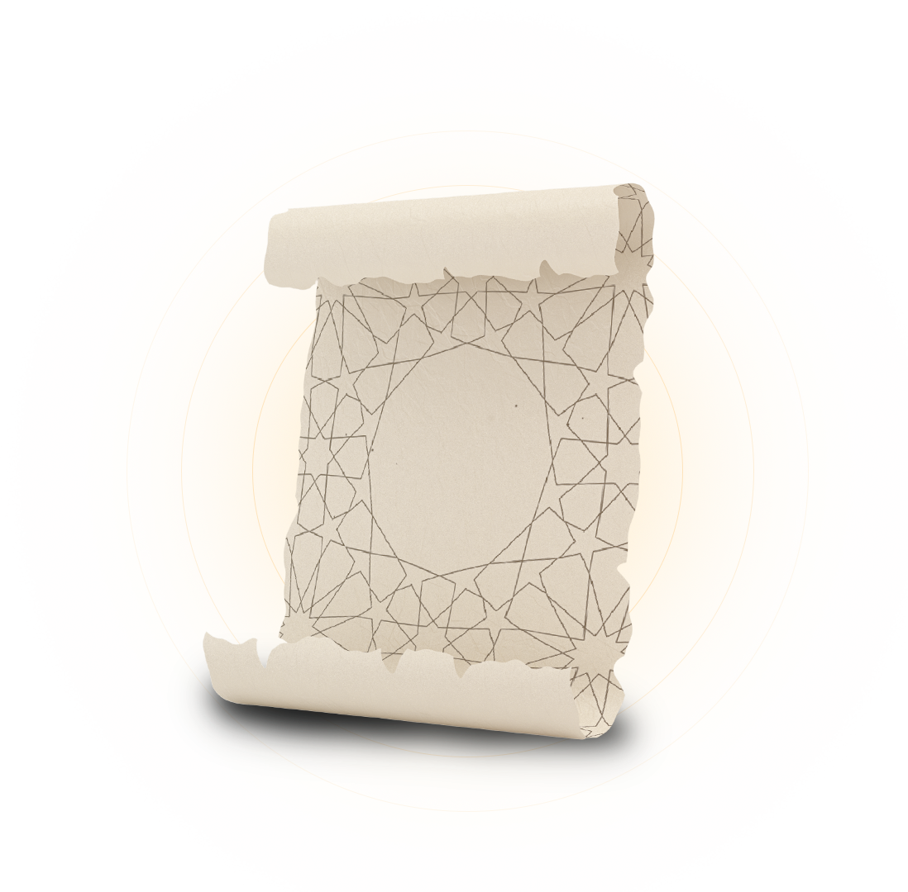
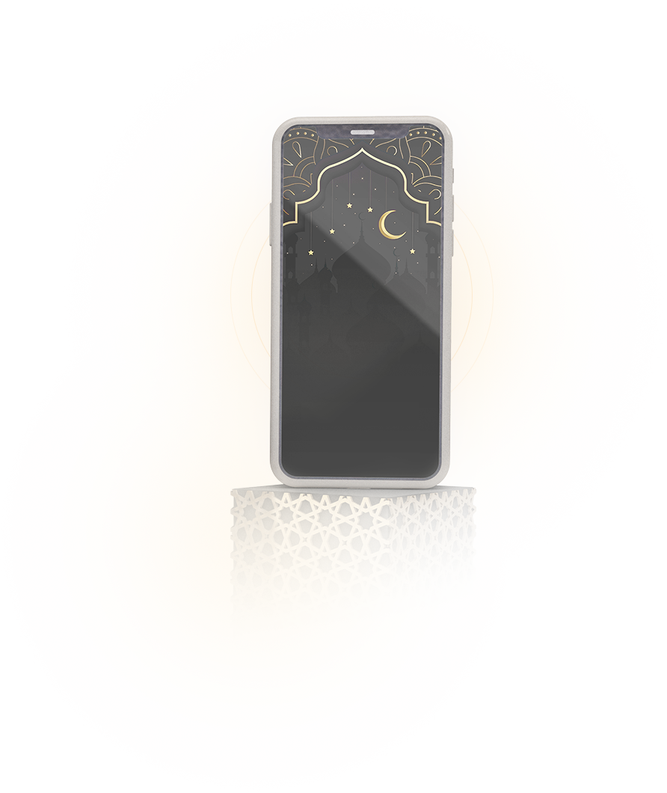
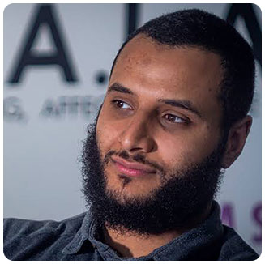
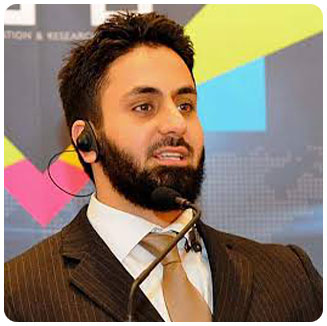
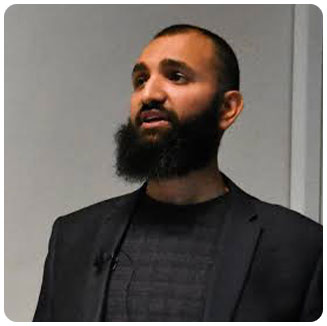
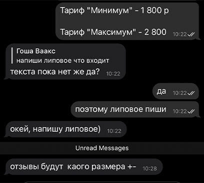
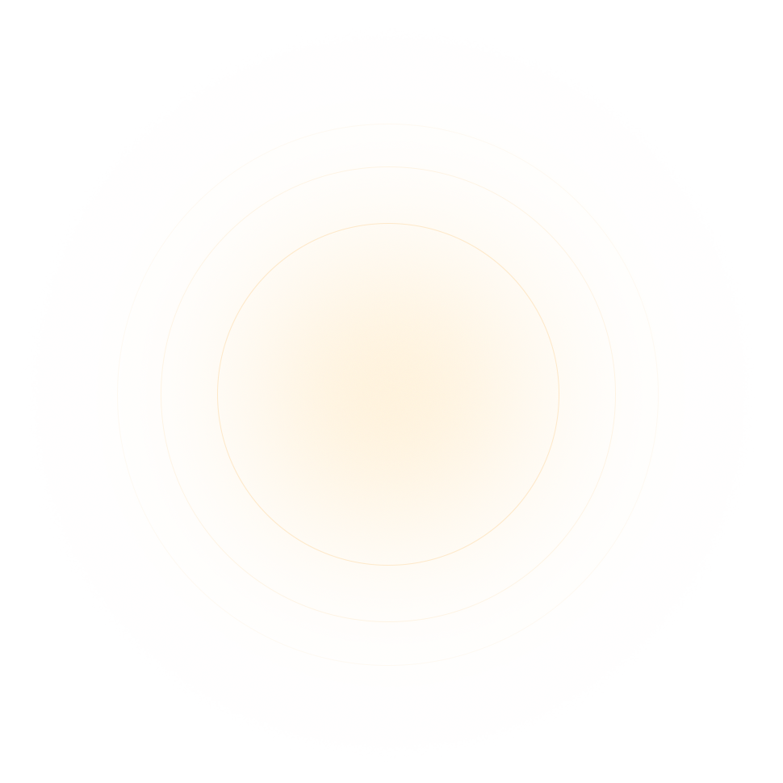
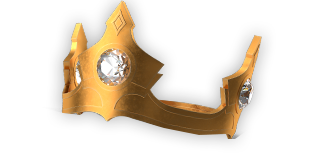

<!DOCTYPE html>
<html lang="ru">
 <head>
	<title>Ислам</title>
	<meta charset="UTF-8">
	<meta name="format-detection" content="telephone=no">
	<link rel="stylesheet" href="css/style.min.css">
	<link rel="shortcut icon" href="favicon.ico">
	<!-- <meta name="robots" content="noindex, nofollow"> -->
	<!-- <meta name="viewport" content="width=device-width, initial-scale=1.0, maximum-scale=1.0, user-scalable=0"> -->
	<meta name="viewport" content="width=device-width, initial-scale=1.0">
</head>

<body>
    <div class="wrapper">
        <header class="header">
    <div class="header__content _container">
        <div class="header__top">
            <div class="header__nav">
                <a href="#program" class="header__nav-item">Программа</a>
                <a href="#curators" class="header__nav-item">Учителя</a>
                <a href="#tarif" class="header__nav-item">Тарифы</a>
            </div>
            <a href="callto:88000000000" class="header__call">
				  8 (800) 000-00-00
				  <span>Заказать обратный звонок</span>
            </a>
        </div>
        <div class="header__bottom">
            <h1 class="header__title title">
                <span>Научись приглашать людей в Ислам и выстраивать</span> взаимоотношение с любым человеком
            </h1>
            <div class="header__text">
                <span>Изучи все основы Ислама</span> и научись выстраивать взаимоотношение <br> абсолютно с любым человеком
            </div>
            <div class="header__btn">
                <a href="#tarif" class="btn">Узнать подробнее</a>
            </div>
            <div class="header__paper">
                <picture><source srcset="img/header/paper.webp" type="image/webp"></picture>
            </div>
            <div class="header__dop">
                <span> </span>
            </div>
            <div class="header__more">
                <div class="header__more-wrap">
                </div>
                <p> Является базовой рыбой для текстов на латинице начала</p>
            </div>
        </div>
    </div>
    <div class="header__light">
        <picture><source srcset="img/header/light.webp" type="image/webp"></picture>
    </div>
</header>
        <main class="page">
            <section class="cases">
                <div class="cases__container _container">
                    <h2 class="cases__title title">
                        <span>Чему ты научишься </span> после прохождения обучения?
                    </h2>
                    <div class="cases__inner inner-cases">
                        <div class="inner-cases__wrap">
                            <div class="inner-cases__item">
                                <div class="inner-cases__num">
                                    01
                                    <span>+</span>
                                </div>
                                <h3 class="inner-cases__title">
                                    Научитесь выстраивать
                                </h3>
                                <div class="inner-cases__text">
                                    контакт с абсолютно любым человеком
                                </div>
                            </div>
                            <div class="inner-cases__item">
                                <div class="inner-cases__num">
                                    02
                                    <span>+</span>
                                </div>
                                <h3 class="inner-cases__title">
                                    Приобретете жезео бетонную уверенность
                                </h3>
                                <div class="inner-cases__text">
                                    при общении с НЕ мусульманами
                                </div>
                            </div>
                            <div class="inner-cases__item">
                                <div class="inner-cases__num">
                                    03
                                    <span>+</span>
                                </div>
                                <h3 class="inner-cases__title">
                                    Перестанете стыдиться или бояться
                                </h3>
                                <div class="inner-cases__text">
                                    рассказывать людям о религии
                                </div>
                            </div>
                            <div class="inner-cases__item">
                                <div class="inner-cases__num">
                                    04
                                    <span>+</span>
                                </div>
                                <h3 class="inner-cases__title">
                                    Сможете поддержать диалог
                                </h3>
                                <div class="inner-cases__text">
                                    с представителем любого мировоззрения
                                </div>
                            </div>
                            <div class="inner-cases__phone">
                                <picture><source srcset="img/cases/phone.webp" type="image/webp"></picture>
                            </div>

                        </div>
                        <div class="inner-cases__wrap">
                            <div class="inner-cases__item">
                                <div class="inner-cases__num">
                                    05
                                    <span>+</span>
                                </div>
                                <h3 class="inner-cases__title">
                                    Научитесь обрабатывать грамотно возражения
                                </h3>
                                <div class="inner-cases__text">
                                    НЕ мусульман относител истинности религии
                                </div>
                            </div>
                            <div class="inner-cases__item">
                                <div class="inner-cases__num">
                                    06
                                    <span>+</span>
                                </div>
                                <h3 class="inner-cases__title">
                                    Изучите основные аргументы и ответы
                                </h3>
                                <div class="inner-cases__text">
                                    на них с Атеистами и Христианами
                                </div>
                            </div>
                            <div class="inner-cases__item">
                                <div class="inner-cases__num">
                                    07
                                    <span>+</span>
                                </div>
                                <h3 class="inner-cases__title">
                                    Поймете основные рациональные аргументы
                                </h3>
                                <div class="inner-cases__text">
                                    в пользу истинности пророчества Мухаммада
                                </div>
                            </div>
                            <div class="inner-cases__item">
                                <div class="inner-cases__num">
                                    08
                                    <span>+</span>
                                </div>
                                <h3 class="inner-cases__title">
                                    Изучите и научитесь отвечать
                                </h3>
                                <div class="inner-cases__text">
                                    на основную критику в адрес Ислама
                                </div>
                            </div>
                        </div>

                    </div>
                </div>
            </section>
            <section class="curators" id="curators">
                <div class="curators__container _container">
                    <h2 class="curators__title">
                        Учителя
                    </h2>
                    <div class="curators__wrap wrap-curators">
                        <div class="wrap-curators__img">
                            <picture><source srcset="img/curators/1.webp" type="image/webp"></picture>
                            <picture><source srcset="img/curators/note.webp" type="image/webp"></picture>
                        </div>
                        <div class="wrap-curators__text">
                            <span>Кирилл Джабраил</span> - Исламский блогер с аудиторией 76 000 подписчиков. Студент Международного Открытого Университета, факультета Даавата и основ религии Муслим - русскоговорящий брат, имеющий большой опыт даавата
                            <br><br> в США и России. Автор статей по сравнительному религиоведению и апологетике Ислама. Занимается дааватом <span>больше 10 лет</span>

                        </div>
                    </div>
                    <div class="curators__wrap wrap-curators">

                        <div class="wrap-curators__text">
                            <span>Мухаммад Хиджаб</span> - Английский дааватчик, сравнительный религиовед, политолог, историк теологии, писатель. Он является автором работ по философии религии, политической философии и теологии. Он также имеет ученые
                            степени в этих областях получив степень бакалавра в области политики, степень магистра в области истории (both from QMUL Uni. of London) и еще в области исламских исследований (from SOAS Uni. Of London) <br><br> Он также
                            <span>прошел Исламское обучение по изучению Корана, </span> хадисов, Усуле и арабском языке в Исламской семинарии The Shinqeeti Institute". В настоящее время Хиджаб занимается дальнейшими аспирантскими исследованиями в области
                            прикладной теологии

                        </div>
                        <div class="wrap-curators__img wrap-curators__img-left">
                            <picture><source srcset="img/curators/2.webp" type="image/webp"></picture>
                            <picture><source srcset="img/curators/note.webp" type="image/webp"></picture>
                        </div>
                    </div>
                    <div class="curators__wrap wrap-curators">
                        <div class="wrap-curators__img">
                            <picture><source srcset="img/curators/3.webp" type="image/webp"></picture>
                            <picture><source srcset="img/curators/note.webp" type="image/webp"></picture>
                        </div>
                        <div class="wrap-curators__text">
                            <span>Хамза Тзорти</span> - Англоязычный дааватчик. Грек, принявший Ислам. Автор книги "Божественная реальность: Бог, Ислам и Мираж атеизма". Магистра философии в Лондонском университете. В настоящее время он продолжает свою
                            аспирантуру в этой области. Хамза изучал исламскую мысль и теологию под руководством квалифицированных ученых <br> <br> Он провел семинары, курсы и аккредитованный дипломный курс по темам, связанным с Исламской мыслью. Он
                            имеет <span>более чем
                                15-летний опыт разумной и сострадательной защиты и распространения ислама.</span> Хамза выступал во многих университетах по всему миру. Он обсуждал с видными учеными и мыслителями ислам и атеизмего собеседниками были
                            профессор Лоуренс Краусс, профессор Питер Саймонс, Дэн Баркер и профессор Саймон Блэкберн. Хамза принял ислам в 2002 году <br> <br> Хамза имеет профессиональное образование в области управления проектами и программами, благотворительности
                            и управления операциями. Он был генеральным директором iERA (даават команды) с апреля 2017 года по февраль 2020 года
                        </div>
                    </div>
                    <div class="curators__wrap wrap-curators">

                        <div class="wrap-curators__text">
                            <span>Суббур Ахмад</span> - является автором готовящейся к изданию книги "Несостоявшаяся Гипотеза"Он - публичный оратор и писатель. Он сосредоточен на взаимодействии с новым атеизмом и также, много путешествовал по всему
                            миру, обучая мусульман тому как доносить Ислам немусульманам <br><br> Суббур специализируется на философии науки с акцентом на теорию эволюции ДарвинаНа протяжении многих лет он спорил со многими выдающимися атеистами, включая
                            профессоров, атеистических активистов и интернет-деятелей на темы науки, существования Бога и дарвинизма <br><span>Он выступал с докладами по всей Северной Америке, Латинской Америке, Австралии и Африке</span> <br><br> Ахмад
                            имеет степень бакалавра в области инженерии, степень магистра и степень магистра философии в Биркбек-колледже (Лондонский университет). В настоящее время он является кандидатом наук, специализирующимся в области философии
                            биологии

                        </div>
                        <div class="wrap-curators__img wrap-curators__img-left">
                            <picture><source srcset="img/curators/4.webp" type="image/webp"></picture>
                            <picture><source srcset="img/curators/note.webp" type="image/webp"></picture>
                        </div>
                    </div>

                </div>
                <div class="curators__light curators__light-3">
                    <picture><source srcset="img/curators/light-3.webp" type="image/webp"></picture>
                </div>
                <div class="curators__light curators__light-2">
                    <picture><source srcset="img/curators/light-2.webp" type="image/webp"></picture>
                </div>
                <div class="curators__light curators__light-1">
                    <picture><source srcset="img/curators/light-1.webp" type="image/webp"></picture>
                </div>
            </section>
            <section class="program" id="program">
                <div class="program__container _container">
                    <h2 class="program__title title">
                        Программа курса
                    </h2>
                    <div class="program__wrap wrap-program wrap-program-1">
                        <div class="wrap-program__item">

                            <div class="wrap-program__content"><span>1 БЛОК - Основы даавата </span> - Кому делать даава - Как делать даават? <br> - Какая награда вас ждет? <br> - Как делать даават в интернете? <br> - Как делать даават на улице? <br> -Как приглашать незнакомых людей в
                                Ислам? <br> - Как приглашать друзей, коллег по работе и сверстников в Ислам?
                                <div class="wrap-program__plus plus"><span></span></div>
                            </div>


                            <div class="wrap-program__dop">
                                <span>После прохождения данного модуля?</span> Вы обретете уверенность в общениис НЕ мусульманами и поймете зачемделать даават и обучитесь четким методиками техникам и пониманию как делать дааватлюдям и уже сможете
                                начать выстраиватьвзаимоотношения с людьми, чтобыприглашать их в Ислам
                            </div>


                        </div>
                        <div class="wrap-program__item">

                            <div class="wrap-program__content"><span>2 БЛОК - Доказательства истинности пророчества Мухаммада ﷺ</span> - Кому делать даава-Лжец? Безумный или пророк? Социальный статус <br> - Признаки пророчества <br> - Чудеса <br> - Объективно: Почему Мухаммад - пророк?
                                ﷺ <br>
                                <div class="wrap-program__plus plus"><span></span></div>
                            </div>


                            <div class="wrap-program__dop">
                                <span>После прохождения данного модуля?</span> Вы научитесь отвечать на вопросы скептиков: "С чего вы вообще взяли, что Мухаммад ﷺбыл пророком? Может он был безумнымили лжецом? Может это ему причудилось?"
                            </div>


                        </div>
                    </div>
                    <div class="program__wrap wrap-program ">
                        <div class="wrap-program__item wrap-program-big">
                            <div class="wrap-program__content">
                                <div> <span>3 БЛОК</span> - Мухаммад был жестоким? <br> - Почему мусульмане воевали? <br> - Если Бог есть, то почему дети умираюти столько несправедливости? <br> - Смертная казнь за вероотступничествов современном свободном
                                    мире <br> - Если Аллах ни в чем не нуждается, то зачем Ему наше поклонение? <br> - Кто создал Бога? <br> - Попадут ли хорошие неверующиелюди в ад? <br> - Почему Аллах не защитил Тору и Евангелие от искажений?- Правда
                                    ли, что обряды Исламасхожи с ритуалами язычников? <br>
                                </div>
                                <div>- Ислам зарожден в Петре, а не в Мекке? <br> - Если вначале были только Адам и Ева,то как размножалось их потомство? <br> - Кираат - это искажение или просто разночтение? <br> - Может ли Аллах создать камень, которыйне
                                    сможет поднять? <br> - Шариат устарел и он для другого времени? <br> - Сподвижники грабили и убивали? <br> - Пророк страдал Эпилепсией и Шизофренией? <br> - Многоженство - как относиться ? <br> - Почему Ислам самая
                                    молодая религия? <br> - Почему арабский язык так важен в Исламе? <br> - Христианские апокрифы сходятся с Кораном <br> - Коран неправильно описывает Троицу? <br> - Аллах - это Бог луны? <br> - Рабство в Исламе <br> -
                                    Религия придумана для манипуляции? <br>
                                </div>

                                <div class="wrap-program__plus plus"><span></span></div>
                            </div>


                            <div class="wrap-program__dop">
                                <span>После прохождения данного модуля?</span> Вы научитесь давать ответ почти на любое сомнение в адрес Ислама. У вас пропадет страх перед"неудобными" вопросами. Страх представлять свою религию сменится на твердую уверенность
                            </div>
                        </div>

                    </div>
                    <div class="program__wrap wrap-program wrap-program-3">
                        <div class="wrap-program__item">
                            <div class="wrap-program__content"><span>4 БЛОК - Христианство </span> - Введение в Христианство <br> - Общий обзор <br> - Исторический Иисус <br> - Авторство Евангелий <br> - Канон Ветхого и Нового заветов <br> - Апостол Павел и его влияние <br> на раннее христианство
                                - Группы Христиан первых веков <br> - Троица или единобожие <br> - Первородный грех <br> - Бог есть любовь? <br> - Пророчества об Иисусе и Мухаммаде ﷺв Ветхом и Новом Завете <br>
                                <div class="wrap-program__plus plus"><span></span></div>
                            </div>


                            <div class="wrap-program__dop">
                                <span>После прохождения данного модуля? </span> Вы сможете свободно общаться и поддерживатьдиалог с любым христианином. Будете знатьосновные слабые места в данной религиии научите доносить до представителейХристианидею
                                Ислама. Вы станетеинтересным собеседником для Христиан

                            </div>
                        </div>
                        <div class="wrap-program__item">
                            <div class="wrap-program__content"> <span>5 БЛОК - Диалог с атеистами</span> - Почему жизнь не имеет смысла без Бога? <br> - Аргумент от зависимости <br> (непредвиденные обстоятельства) - Коранический аргумент в пользусуществования Бога <br> - Чудо Корана <br>                                - Исламский ответ на проблему зла и страданий <br> - Почему вера в Бога является врожденной <br> - Аргумент от разума и аргумент от морали <br> - Почему наука не ведет к атеизму <br> - Единство Бога <br> - Почему Бог достоин
                                поклонения <br> - Ответы на академические и популярныеутверждения <br>
                                <div class="wrap-program__plus plus"><span></span></div>
                            </div>


                            <div class="wrap-program__dop">
                                <span>После прохождения данного модуля?</span> Вы научитесь отвечать на вопросы скептиков: "С чего вы вообще взяли, что Мухаммад ﷺбыл пророком? Может он был безумнымили лжецом? Может это ему причудилось?"
                            </div>
                        </div>
                    </div>
                </div>
                <div class="program__dop-1">
                    <picture><source srcset="img/program/light-1.webp" type="image/webp"></picture>
                </div>
                <div class="program__dop-2">
                    <picture><source srcset="img/program/light-2.webp" type="image/webp"></picture>
                </div>
            </section>
            <section class="slider">
                <div class="slider__container _container">
                    <h2 class="slider__title title">
                        Отзывы
                    </h2>
                    <div class="my-slider">
                        <div class="slider__item">
                            <picture><source srcset="img/slider/1.webp" type="image/webp"></picture>
                        </div>
                        <div class="slider__item">
                            <picture><source srcset="img/slider/1.webp" type="image/webp"></picture>
                        </div>
                        <div class="slider__item">
                            <picture><source srcset="img/slider/1.webp" type="image/webp"></picture>
                        </div>
                        <div class="slider__item">
                            <picture><source srcset="img/slider/1.webp" type="image/webp"></picture>
                        </div>
                        <div class="slider__item">
                            <picture><source srcset="img/slider/1.webp" type="image/webp"></picture>
                        </div>
                        <div class="slider__item">
                            <picture><source srcset="img/slider/1.webp" type="image/webp"></picture>
                        </div>
                        <div class="slider__item">
                            <picture><source srcset="img/slider/1.webp" type="image/webp"></picture>
                        </div>
                        <div class="slider__item">
                            <picture><source srcset="img/slider/1.webp" type="image/webp"></picture>
                        </div>
                    </div>

                    <div class="slider__arrow">
                        <div class="slider__next">
                            <picture><source srcset="img/slider/next.webp" type="image/webp"></picture>
                        </div>
                        <div class="slider__prev">
                            <picture><source srcset="img/slider/prev.webp" type="image/webp"></picture>
                        </div>
                    </div>
                </div>

                <div class="slider__bg">
                    <picture><source srcset="img/slider/bg.webp" type="image/webp"></picture>
                </div>




            </section>
            <section class="tarif" id="tarif">
                <div class="tarif__container _container">
                    <h2 class="tarif__title">
                        Тарифы
                    </h2>
                    <div class="tarif__inner inner-tarif">
                        <div class="inner-tarif__item">
                            <div class="wrap-program__item">

                                <div class="inner-tarif__content wrap-program__content">
                                    <h2 class="inner-tarif__title">
                                        «Минимум»
                                    </h2>
                                    <div class="wrap-program__plus plus"><span></span></div>
                                </div>


                                <div class="wrap-program__dop">
                                    - Основы даавата <br> - Доказательство истинностипророчества Мухаммада ﷺ <br> - Опровержение критикиИслама <br> - БЕЗ ОБРАТНОЙ СВЯЗИ <br> - Доступ к урокам на 3 месяца <br>
                                    <div class="tarif__price">
                                        1.700р.
                                    </div>
                                    <div class="tarif__btn">
                                        <a href="#" class="btn">Приобрести</a>
                                    </div>
                                </div>


                            </div>
                        </div>
                        <div class="inner-tarif__item">
                            <div class="wrap-program__item">

                                <div class="inner-tarif__content wrap-program__content">
                                    <div class="inner-tarif__crown inner-tarif__crown-1">
                                        <picture><source srcset="img/tarif/crown-1.webp" type="image/webp"></picture>
                                    </div>
                                    <h2 class="inner-tarif__title">
                                        «Максимум»
                                    </h2>
                                    <div class="wrap-program__plus plus"><span></span></div>
                                </div>


                                <div class="wrap-program__dop">
                                    - Основы даавата <br> - Доказательство истинности пророчества Мухаммада ﷺ <br> - Опровержение критикиИслама <br> - Дискуссия с Христианством <br> - Дискуссия с Атеизмом <br><br> - ОБРАТНАЯ СВЯЗЬ через кураторов <br>                                    - Доступ к урокам на 1 год <br>
                                    <div class="tarif__price">
                                        2.700р.
                                    </div>
                                    <div class="tarif__btn">
                                        <a href="#" class="btn">Приобрести</a>
                                    </div>
                                </div>


                            </div>
                        </div>
                        <div class="inner-tarif__item">
                            <div class="wrap-program__item">

                                <div class="inner-tarif__content wrap-program__content">
                                    <div class="inner-tarif__crown inner-tarif__crown-2">
                                        <picture><source srcset="img/tarif/crown-2.webp" type="image/webp"></picture>
                                    </div>
                                    <h2 class="inner-tarif__title">
                                        «Индивидуальный»
                                    </h2>
                                    <div class="wrap-program__plus plus"><span></span></div>

                                </div>


                                <div class="wrap-program__dop">
                                    - Все из тарифа «Минимум»и «Максимум» <br><br>- Вы можете 2 раза созвонитьсяс лекторами проекта (Кирилл,Муслим и Али) и обсудить ваши индивидуальные случаи в жизни <br> <br> - Вы можете предложить 1 любой вопрос,
                                    который вы не нашлина нашем курсе и мы запишем уроки по нему для участниковпроекта <br> <br> - Вы можете в любое время написать лекторам (Кириллу, Муслиму, Али) в личном чате. <br> <br>
                                    <div class="tarif__price">
                                        15.000р.
                                    </div>
                                    <div class="tarif__btn">
                                        <a href="#" class="btn">Приобрести</a>
                                    </div>
                                </div>


                            </div>
                        </div>
                        <div class="tarif__bg">
                            <picture><source srcset="img/tarif/tarif__bg.webp" type="image/webp"></picture>
                        </div>
                    </div>

                </div>
                <div class="tarif__dop-1">
                    <picture><source srcset="img/tarif/light-1.webp" type="image/webp"></picture>
                </div>
                <div class="tarif__dop-2">
                    <picture><source srcset="img/tarif/light-2.webp" type="image/webp"></picture>
                </div>
            </section>
        </main>
        <footer class="footer">
    <div class="footer__content _container">
        <div class="footer__row">
            <div class="footer__item">
                <span>Почта -</span>
                <a href="mailto:koran@gmail.com">Koran@gmail.com</a> <br> <span>ИНН </span> - 781645674564
            </div>
            <div class="footer__item">
                <span>Телефон</span> - <a href="telto:">8 (800) 800-34-34 </a>
            </div>
        </div>
    </div>
</footer>
    </div>
    <div class="popup">
	<div class="popup__content">
		<div class="popup__body">
			<div class="popup__close"></div>
		</div>
	</div>
</div>
<div class="popup popup_video">
	<div class="popup__content">
		<div class="popup__body">
			<div class="popup__close popup__close_video"></div>
			<div class="popup__video _video"></div>
		</div>
	</div>
</div>
 <script src="https://code.jquery.com/jquery-3.3.1.min.js"></script>
<script src="https://cdnjs.cloudflare.com/ajax/libs/slick-carousel/1.8.1/slick.min.js"></script>
<!-- <script src="js/vendors.min.js"></script> -->
<script src="js/app.min.js"></script>
</body>

</html>